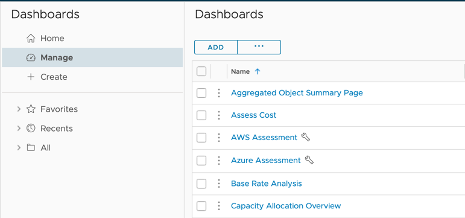
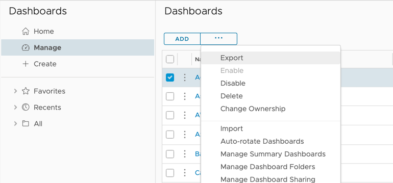
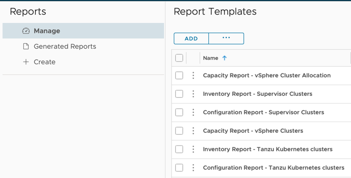
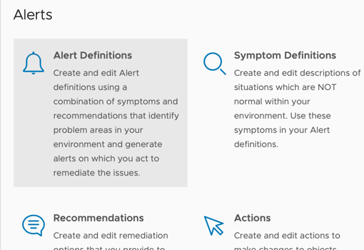
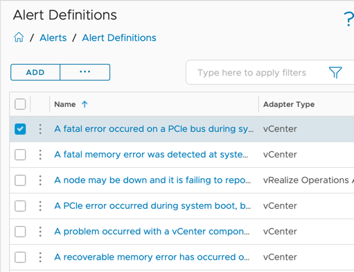
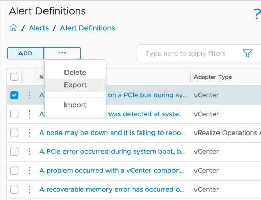
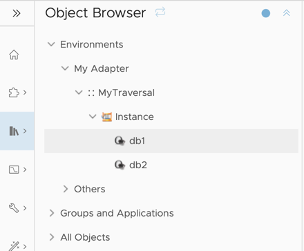
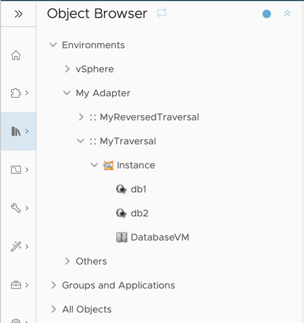
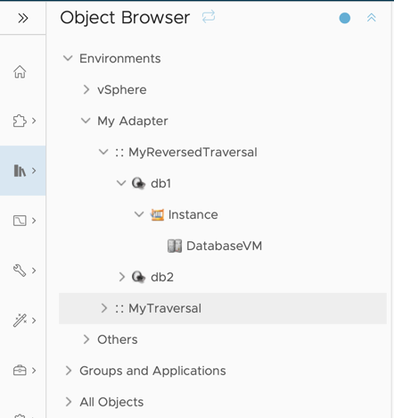
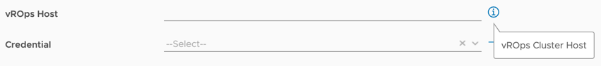

Adding Content¶
To add content to a Management Pack, first create the adapter with the objects, metrics, properties, and relationships that are necessary for the content. Once the adapter is ready, install the Management Pack on VMware Cloud Foundation (VCF) Operations and create an adapter instance.
Then follow the instructions below to create the content, export it, and add to the Management Pack project.
Adding a Dashboard¶
-
To add a dashboard to a Management Pack, first create the dashboard. Creating a dashboard is outside the scope of this document, but more information can be found here:
-
Once the dashboard is created, click
Manageon theVisualize→Dashboardspage. Select the dashboard, click the...button, and selectExport.

Note
Selecting multiple dashboards will combine them into a single dashboard.json file (see step 3). All the following steps are identical in this case, but exporting each dashboard individually is recommended as it makes managing the content easier within the Management Pack project.

-
After selecting
Exporta zip file will download with the following files and directories:``` dashboard ├── dashboard.json └── resources └── resources.properties ```Note
A newly created dashboard will not contain a
resourcesdirectory, unless it was cloned and/or edited from an existing dashboard that contained localization (See Adding Localization). If localization is not required, ignore theresourcesdirectories in the following steps.Unzip the file and move the root
dashboarddirectory to the[project_dir]/content/dashboardsdirectory. Thedashboarddirectory and dashboard file (dashboard.json) can be renamed, but should match. For example, with two dashboards,myDashboardandmyOtherDashboard, the project's content directory should look like this:``` ├── dashboards │ ├── myDashboard │ │ ├── myDashboard.json │ │ └── resources │ │ └── resources.properties │ └── myOtherDashboard │ ├── myOtherDashboard.json │ └── resources │ └── resources.properties └── <...> content ``` -
If a dashboard uses any configuration files (Text Widget Content, Resource Kind Metrics, or Topology Widget Configurations), these are not included in the zip file. To add these to the Management Pack project, copy the necessary content from the
Configure→Configuration Filespage in VCF Operations and save as a file in thecontent/files/txtwidget,content/files/reskndmetric, orcontent/files/topowidgetdirectory. -
Once the dashboard(s) are present in the content directory as above, run
mp-buildto create a new pak file that includes the dashboards.
Adding a Report Template¶
-
To add a report template to a Management Pack, first create the template. Creating a report template is outside the scope of this document, but more information can be found here:
-
Once the report template is created, click
Manageon theVisualize→reportspage. Select the report, click the...button, and selectExport.

Note
Selecting multiple report templates will combine them into a single content.xml file (see step 3). All the following steps are identical in this case, but exporting each report individually is recommended as it makes managing the content easier within the Management Pack project. An exception is when multiple report templates share a view. In this case, best practice is to do one of two things:
- Select all report templates with the shared view, so that they are combined into a single file and the view is not duplicated, or
- Duplicate the view before exporting, so that each report template has its own unique view that can be modified separately.
The reason for this is that if a view is shared between two report templates, but is defined in multiple files, than the view could be modified in multiple places, leading to potential conflicts.

-
After selecting
Exporta zip file will download with the following files and directories:Note
A newly created report template will not contain a
resourcesdirectory, unless it was cloned and/or edited from an existing report template that contained localization (See Adding Localization). If localization is not required, ignore theresourcesdirectories in the following steps.Unzip the file and move the root directory to the
[project_dir]/content/reportsdirectory. The directory and report file (content.xml) can be renamed to match, if desired. For example, with two reports,myReportandmyOtherReport, the project's content directory should look like this:``` content ├── reports │ ├── myReport │ │ ├── myReport.xml │ │ └── resources │ │ └── content.properties │ └── myOtherReport │ ├── myOtherReport.xml │ └── resources │ └── content.properties └── <...> ``` -
Once the report template(s) are present in the content directory as above, run
mp-buildto create a new pak file that includes the report templates.
Adding Alert Definitions¶
-
To add an alert definition to a Management Pack, first create the alert definition. Creating an alert definition is outside the scope of this document, but more information can be found here:
-
Once the alert definition is created, click
Manageon theConfigure→Alerts→Alert Definitionspage. Select the alert, click the...button, and selectExport.

Note
Selecting multiple alert definitions will combine them into a single xml file (see step 3). All the following steps are identical in this case, but exporting each alert individually is recommended as it makes managing the content easier within the Management Pack project. An exception is when multiple alert definitions share symptoms or recommendations. In this case, best practice is to do one of three things:
- Select all alert definitions with a shared dependency, so that they are combined into a single file and the dependency is not duplicated, or
- Move the shared dependency out of the alert definition xml file and into its own xml file, which then goes in the
content/recommendationsorcontent/symptomsdirectory. - Duplicate the symptom or recommendation before exporting, so that each alert definition has its own unique dependency that can be modified separately.
The reason for this is that if a dependency is shared between two alerts, but is defined in multiple files, than the dependency could be modified in multiple places, leading to potential conflicts.

-
After selecting
Exporta zip file will download containing a single xml file that contains the alert definition and any dependent content (e.g., symptoms, recommendations)Unzip the file and move the alert xml file to the
[project_dir]/content/alertdefsdirectory. The alert file can be renamed. For example, with two alerts,myAlertandmyOtherAlert, the project's content directory should look like this:``` content ├── alertdefs │ ├── myAlert.xml │ └── myOtherAlert.xml └── <...> ``` -
Once the alert definition(s) are present in the content directory as above, run
mp-buildto create a new pak file that includes the alert definitions.
Adding a Traversal¶
Note
Traversals must be created manually. There is no option to create in the VCF Operations UI and export.
A traversal specification defines how to navigate through objects by defining one or more paths through their relationships, and is defined in the file content/traversalSpecs/traversal.xml.
Each path consists of two or more nodes, and each node is separated by two bars (||).
A traversal always starts with the same object type, known as the root. When creating a traversal, the root object type is specified using the rootAdapterKind and rootResourceKind attributes. Every path in the traversal must start with the root object as its first node. Nodes are represented by the adapter type and object type separated by double colons (::). After the first node, each node must also include a relationship direction, either child, or ~child (parent), separated from the adapter kind and resource kind by double colons (::).
Multiple traversals can be included in a Management Pack, and each individual traversal can have its own root object type.
For example, assume we have an adapter called my_adapter with two object types, my_instance_resource_kind and my_database_resource_kind that have a parent-child relationship (each my_instance_resource_kind object is the parent of some number of my_database_resource_kind objects). Additionally, we have a relationship to VMs that are a parent to my_instance_resource_kind objects. The raw relationships look like this:
traversal.xml:
<?xml version="1.0" encoding="utf-8" ?>
<AdapterKind xmlns="http://schemas.vmware.com/vcops/schema" key="my_adapter" nameKey="1" version="1">
<TraversalSpecKinds>
<TraversalSpecKind name="MyTraversal" rootAdapterKind="my_adapter" rootResourceKind="my_instance_resource_kind" description="Navigate from the Instance to the Databases hosted on it.">
<ResourcePath path="my_adapter::my_instance_resource_kind||my_adapter::my_database_resource_kind::child"/>
</TraversalSpecKind>
</TraversalSpecKinds>
</AdapterKind>
Object Browser will show the traversal in the Environments section. The root node is named Instance, and there are two instances of the path for each of the two database objects that are children of the Instance object.

Taking the simple traversal as a starting point, we can add in the VM resource, and create a second traversal that starts at the 'bottom', with the databases, and moves upward:
<?xml version="1.0" encoding="utf-8" ?>
<AdapterKind xmlns="http://schemas.vmware.com/vcops/schema" key="my_adapter" nameKey="1" version="1">
<TraversalSpecKinds>
<TraversalSpecKind name="MyTraversal" rootAdapterKind="my_adapter" rootResourceKind="my_instance_resource_kind" description="Navigate from the Instance to the Databases hosted on it and VM hosting it.">
<ResourcePath path="my_adapter::my_instance_resource_kind||my_adapter::my_database_resource_kind::child"/>
<ResourcePath path="my_adapter::my_instance_resource_kind||VMWARE::VirtualMachine::~child"/>
</TraversalSpecKind>
<TraversalSpecKind name="MyReversedTraversal" rootAdapterKind="my_adapter" rootResourceKind="my_database_resource_kind" description="Navigate from each Database to its Instance, and from the Instance to the VM.">
<ResourcePath path="my_adapter::my_database_resource_kind||my_adapter::my_instance_resource_kind::~child||VMWARE::VirtualMachine::~child"/>
</TraversalSpecKind>
</TraversalSpecKinds>
</AdapterKind>
Info
For more information about the supported elements and attributes, see the traversal.xml documentation.
When the Management Pack is installed in VCF Operations, the Object Browser will show the both traversals in the Environments section.
In the first traversal's root node is an instance, and there are two paths. The first gets the database children, and the second gets the VM parent. Since the database and VM are both on the second node of the paths, these will show up as siblings:

In the second traversal ("MyReversedTraversal"), instead of starting from the instance, the traversal's root node is a database. This traversal has a single path, from database to instance to VM. Thus, every database will show up at the top level, and each can be expanded to show the instance it resides on, and the instance can be expanded to show the VM:

Adding Localization¶
The VCF Operations UI supports translations in resource files that are included within a Management Pack.
The corresponding model element in the content file (dashboard.json, describe.xml, etc) has an identifying attribute (often key or name), which also is the default representation in the UI (a label).
To change this label an element, add a nameKey attribute in the model definition. The value of the nameKey attribute must be a positive integer, and corresponds to the key portion of
a key-value pair in localization resource files.
For example, to localize total_bytes attribute from a describe.xml file, first ensure there is a nameKey element that has a unique value:
<ResourceAttribute nameKey="182" dashboardOrder="1" key="total_bytes" dataType="integer" isProperty="false" />
resources.properties (In the case of report templates: content.properties) file, which reside in a resources directory next to the content, and by convention is English.
conf
├── describe.xml
│ └── resources
│ └── resources.properties <- Default (English) resource localization file
<...>
The resources.properties file should contain all nameKey values and English labels:
Note
NameKey integers do not have to be in order or contiguous.
To supply an additional translation, create an additional file with the form resources_<locale>.properties, with the same set of keys as the original file but mapping to translated values.
A locale specifier can have two parts, a two-letter language ID and an optional two-letter country code.
The currently supported locales are:
| Locale | Language |
|---|---|
| de | German |
| es | Spanish |
| fr | French |
| ja | Japanese |
| ko | Korean |
| zh-CN | Chinese (Simplified) |
| zh-TW | Chinese (Traditional) |
For example, to translate into French, add a resources file with the 'French' language code to the resources directory:
conf
├── describe.xml
│ └── resources
│ ├── resources.properties
│ └── resources_fr.properties <- French resource localization file
<...>
resources_fr.properties file should contain all nameKey values in the resources.properties with translated values:
Configuration Fields can include descriptions. A description can be used to provide a more detailed explanation of what the configuration field does or controls, and will show up in the UI as a tooltip that appears when a user clicks an info button to the right of the field.
To add a description, use the nameKey value appended with .description. For example:
